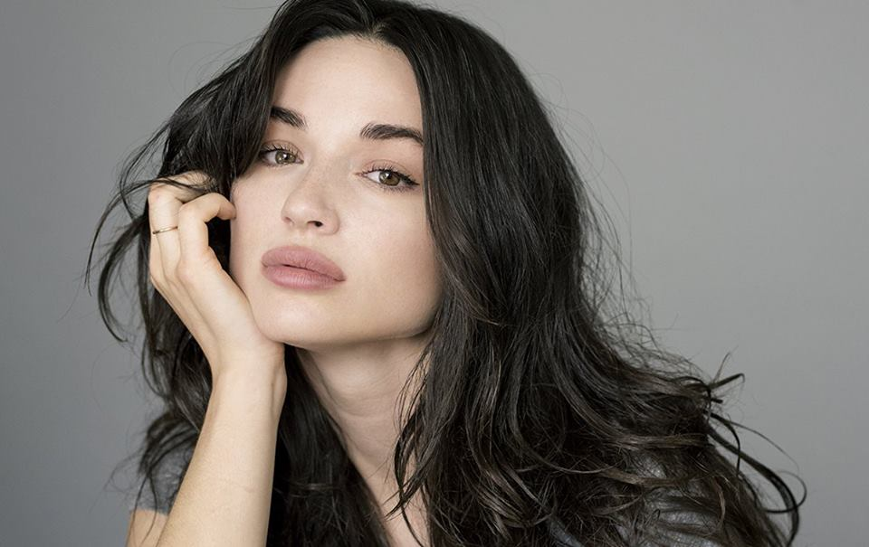

Crystal Reed

Atriz americana de cinema e televisão que tornou-se conhecida do público por seu papel no filme Amor a Toda Prova, de 2011, e por sua atuação na série Teen Wolf, da MTV. Em 2019, passou a estrelar a série Coisa do Pântano.
Antes da Fama
Fez sua primeira aparição nos palcos durante o ensino médio, nas produções musicais Grease: Nos Tempos da Brilhantina e Annie.
Curiosidades
Teve um papel coadjuvante no longa de ficção científica Skyline - A Invasão, de 2010.
Vida Pessoal
Filha única, nasceu em Roseville, Michigan. Ficou noiva de Darren McMullen em 2017, mas o romance acabou dois anos depois.
Ligações
Contracenou com Ryan Gosling no filme Amor a Toda Prova, de 2011.